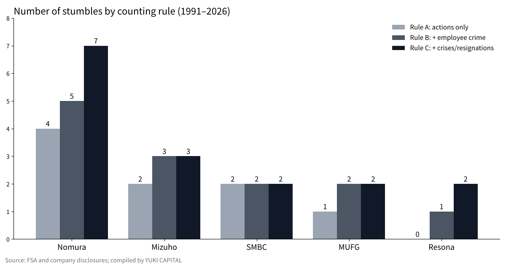
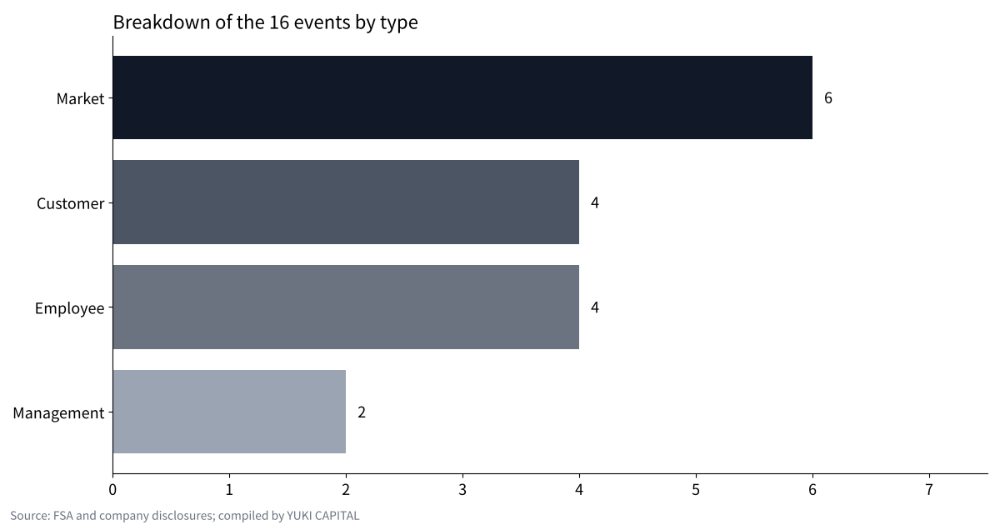

How often have Japan's big banks and brokers stumbled? 35 years of scandals at Resona, MUFG, SMBC, Mizuho and Nomura, and how to choose where to keep your money
On November 17, Rakuten Securities said login IDs for up to about 11.25 million accounts, and names, addresses, income and financial assets for up to about 4.47 million of them, may have leaked.
Every announcement like this raises the same question: are the big firms safer? Yet Japan's big banks and brokers have also been sanctioned many times.
The question of this article is how many times Japan's five big groups have stumbled since 1991, how much of their customers' money was actually lost, and what yardstick to use when choosing where to keep money.

- Whichever of three counting rules is used, all five groups stumbled at least once; Nomura, the most frequent, stumbled 4 to 7 times, and Resona, the least, 0 to 2 times.
- Of 16 events, customers' own assets were actually lost only in the 3 cases of employee crime; in MUFG's safe-deposit-box case the bank had compensated 40 cases, about ¥700 million, by January 2025.
- Unauthorized access at online brokers in spring 2025 reached 3,312 cases and ¥50.6 billion of sales in three months; the scale of damage depends less on whether a firm is big than on how hard its accounts are to hijack.
Question and background
In this article, a scandal means an act that broke laws or rules, or that similarly damaged public trust. An administrative action means an order by the Financial Services Agency (FSA) or another authority, such as a business suspension order, a business improvement order or an administrative monetary penalty.
The subjects are five groups the author uses and wanted to check: Resona, MUFG, SMBC (including SMBC Nikko Securities), Mizuho and Nomura. The period runs about 35 years, from 1991, when brokers' loss compensation came to light, to November 2026.
In autumn 2026, Rakuten Group made a run of data-leak announcements: up to about 3.5 million records at Rakuten Travel on October 26, 362 records of buyers of digital-perk corporate bonds at Rakuten Securities on October 31, and up to about 11.25 million accounts at Rakuten Securities on November 17. To ask whether money will move from online channels to the big firms, we first need the big firms' own record.
It is also worth checking the systems that protect depositors. If a bank fails, deposit insurance protects up to ¥10 million of principal per depositor per bank, plus interest, for deposits other than settlement deposits [14]. Brokers must keep client assets separate from their own, and if a breach of that rule leaves assets unreturned, the Japan Investor Protection Fund compensates up to ¥10 million per person [15].
Both systems, however, cover the case where the firm fails. Employee crime and fraudulent trades after an account takeover fall outside them and depend on the firm's judgment and strength. This article lists each firm's record to see that strength outside the safety net.
Data and method
Sources are announcements by the FSA and the Securities and Exchange Surveillance Commission, the firms' own disclosures of sanctions and remedies, an explanatory paper published by the Ministry of Finance, and the firms' integrated reports [1]–[10]. News reports are used only to confirm years and counts; numbers without a primary source are not used.
There are two steps. First, the five groups' events are listed by year and split into four types: selling against customers' interests (customer type), harming market fairness (market type), employee crime or misconduct (employee type), and failure of systems or management (management type).
Second, because the result depends on what counts as a stumble, the counting rule is varied three ways: Rule A = administrative actions only; Rule B = A plus employee crime; Rule C = B plus management crises and resignations of top executives.
Results
The list contains 16 events. The main ones are shown below.
| Year | Group | Event | Type |
|---|---|---|---|
| 1991 | Nomura | Loss compensation to large clients revealed; president resigned [3] | Customer |
| 1995 | Resona (former Daiwa Bank) | About $1.1 billion of hidden losses at the New York branch; exited the US the next year [9] | Employee |
| 1997 | Nomura | Payoffs to corporate racketeers; president resigned again [3] | Market |
| 2003 | Resona | About ¥1.96 trillion of public funds injected; effectively nationalized [8][9] | Management |
| 2006 | SMBC | Abuse of dominant position in interest-rate swap sales; sales suspension and improvement order [4] | Customer |
| 2012 | Nomura | Insider trading around public offerings; business improvement order [2] | Market |
| 2019 | Nomura | Passed on information about the TSE market reform; business improvement order [2] | Market |
| 2021 | Mizuho | Eight system failures in one year; improvement order and a foreign-exchange-law correction order [5] | Management |
| 2022 | SMBC (SMBC Nikko) | Market manipulation in block offers; improvement order and partial suspension [6] | Market |
| 2024 | MUFG | Shared clients' non-public information between bank and brokerage; improvement order [7] | Customer |
| 2024 | Nomura | Manipulation of long-term JGB futures; penalty of ¥21.76 million [1] | Market |
| 2024 | MUFG | Theft from safe-deposit boxes by a former employee; 40 cases, about ¥700 million compensated as of Jan 2025 [10] | Employee |
Outside the table are Nomura's 2008 insider trading by former staff [2] and the 2024 attempted robbery-murder of clients by a former employee, plus Mizuho's 2006 personal-data leak and the 2016–2019 theft from safe-deposit boxes by a former employee.
Varying the counting rule gives the following counts per group.

By type, market type is the largest with 6 events, customer and employee types have 4 each, and management type has 2. Mizuho's 2006 data leak is counted as customer type.

Sensitivity analysis
Under Rule A, Nomura has 4, SMBC 2, Mizuho 2, MUFG 1 and Resona 0. Under Rule B, Nomura has 5, Mizuho 3, SMBC 2, MUFG 2 and Resona 1; under Rule C, Nomura 7, Mizuho 3, SMBC 2, MUFG 2 and Resona 2.
The gap between rules is largest for Nomura, with a difference of 3 between A and C. It comes from whether the 1991 and 1997 resignations of top management are counted, which is also a judgment on how far old events should weigh on today's firm. Nomura remains the highest under every rule. Resona, by contrast, has 0 under Rule A but ties with SMBC and MUFG under Rule C. Which big firm looks safest depends on how you count.
A high count does not translate directly into losses for customers. Nomura's four market-type events damaged market fairness and trust among issuers, but did not shrink individuals' account balances. In Resona's 2003 case, deposits were protected by public funds.
Discussion
Customers' own assets were actually lost only in the three employee-type cases: the safe-deposit-box thefts at MUFG and Mizuho, and the robbery by a former Nomura employee. MUFG had compensated 40 cases, about ¥700 million, as of January 10, 2025 [10], so the loss fell on the firm.
Damage through online channels is different in type and scale. In about three months from February to April 2025, unauthorized access at six brokers reached 3,312 cases, with fraudulent sales of ¥50.6 billion and purchases of ¥44.8 billion [11]. Employee crime happens case by case; takeovers gather at weak points in a system all at once.
There is an opposing view. Scandals at big firms damage market fairness, and even if individuals lose little, the problem of corporate culture is the same. Nomura's presidents resigned over similar problems in 1991 and 1997, and it received orders over information handling in 2012 and 2019 [2][3]. SMBC Nikko's 2022 action was its fourth administrative action since joining SMBC in 2009 [13].
So what yardstick should depositors use? Working back from the 16 events, three points stand out. First, the strength to compensate when something goes wrong, measured by capital and profit. Second, systems that catch employee misconduct early; after the safe-deposit-box thefts, the Japanese Bankers Association revised its model rules and banned storing cash [16]. Third, systems that stop takeovers: whether you can close the online channel and require confirmation by phone and in writing.
This article has limits. It counts only disclosed cases, not misconduct that never surfaced. Limiting it to five groups means no comparison with online brokers or other big firms. The test will be how far compensation reaches in the Rakuten Securities case and how much fraud uses the leaked data. If compensation is broad and secondary damage is small, the gap with online channels is small.
Conclusion
All five groups stumbled at least once under every counting rule. Being big does not mean scandals do not happen.
But the type that cost individuals their assets was limited to employee crime, and where compensation is known, the firm bore the loss. A yardstick based on the strength to compensate and on systems that stop takeovers is closer to the depositor's actual risk than the number of scandals.
How I see it
My company's main bank is Resona, which I chose because of our relationship. When I choose a bank or broker, what I look at first is whether it is large and number one in its industry, and then whether I have a relationship with it.
I do not use Rakuten Securities. For personal trading I use SBI Securities, chosen because it is easy to use, but I do not trade large amounts there. At Nomura, where the company's assets are held, orders go through only by phone and email. Big firms leak too, but I believe takeovers are hard if phone and email are required. Announcements like this one make me glad I use the big firms.
Sources
- Nomura Holdings / Nomura Securities, "FSA administrative monetary penalty order against Nomura Securities," Oct 31, 2024 https://www.nomuraholdings.com/jp/news/nr/holdings/20241031/20241031.pdf
- FSA, "Administrative actions against Nomura Securities and Nomura Holdings," May 28, 2019 https://www.fsa.go.jp/news/30/shouken/20190528-2.html
- Nomura Holdings, "FSA administrative action against Nomura Securities," Aug 3, 2012 https://www.nomuraholdings.com/jp/news/nr/holdings/20120803/20120803.pdf
- Sumitomo Mitsui Financial Group, "Administrative action against Sumitomo Mitsui Banking Corporation," Apr 27, 2006 https://www.smfg.co.jp/news/pdf/j20060427_01.pdf
- Mizuho Financial Group / Mizuho Bank, "Administrative actions by the FSA and the Ministry of Finance," Nov 26, 2021 https://www2.jpx.co.jp/disc/84110/140120211125441559.pdf
- Japan Credit Rating Agency, "Administrative action against SMBC Nikko Securities," Oct 7, 2022 https://www.jcr.co.jp/download/7e75970c7184df511b2d5a7db74b8724497a4e271bc27a2dca/22d0853.pdf
- Mitsubishi UFJ Financial Group et al., "Administrative action by the FSA," Jun 24, 2024 https://www2.jpx.co.jp/disc/83060/140120240624535223.pdf
- Takahiro Hattori, "Public capital injection and temporary nationalization schemes in Japan," Finance (Ministry of Finance), Apr 2023 https://www.mof.go.jp/public_relations/finance/202304/202304i.pdf
- Resona Holdings, "Integrated Report 2024" https://kitaishihon.com/company/8308/ir-library/10295/download
- MUFG Bank, "Response to misconduct by a former employee and measures to prevent recurrence," Jan 16, 2025 https://www.bk.mufg.jp/news/admin/news0116.pdf
- Lifehacker Japan (citing FSA figures), Apr 2025 https://www.lifehacker.jp/article/2504-how-to-prevent-fishing-fraud/
- Securities and Exchange Surveillance Commission, "Recommendation for a penalty order on Nomura Securities' manipulation of JGB futures," Sep 25, 2024 https://www.fsa.go.jp/sesc/news/c_2024/2024/20240925-1.html
- Jiji Press, "Rough road to regaining trust: fourth recurrence at SMBC Nikko," Nov 5, 2022 https://www.sbbit.jp/article/refers/98762
- Deposit Insurance Corporation of Japan, "Outline of the deposit insurance system" https://www.dic.go.jp/yokinsha/page_000105.html
- Japan Investor Protection Fund, "Client assets covered" https://www.jipf.or.jp/
- Business+IT, "Safe-deposit-box thefts at MUFG and Mizuho: what changed," Jul 18, 2025 https://www.sbbit.jp/article/fj/168229
Charts and illustrations by YUKI CAPITAL
I record my daily numbers and decisions on X.